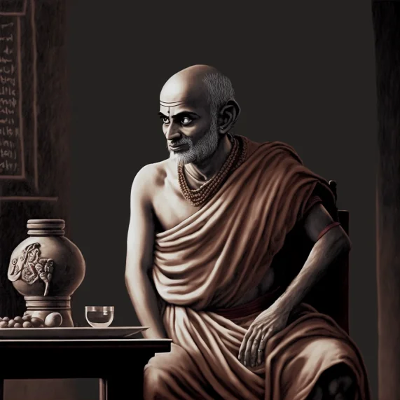

Silabhadra
Xuanzang’s teacher and master of Mahayana Buddhism, Silabhadra shaped Nalanda’s curriculum, emphasizing compassion.
Learn More
Aryadeva
Nagarjuna’s disciple, Aryadeva advanced Madhyamaka philosophy, teaching logic as core to Buddhist thought.
Learn More

Dignaga
Founder of Buddhist logic, Dignaga pioneered studies on perception and inference, greatly influencing Indian philosophy.
Learn MoreDharmapala
Yogachara philosopher, Dharmapala taught consciousness studies, strengthening Nalanda’s Buddhist psychology teachings.
Learn MoreShantarakshita
Philosopher who merged Indian Buddhism with Tibetan traditions, shaping Tibetan Buddhism's development through reasoning.
Learn MoreVasubandhu
Yogachara co-founder, Vasubandhu’s work on consciousness and perception defined Mahayana Buddhist psychology.
Learn More